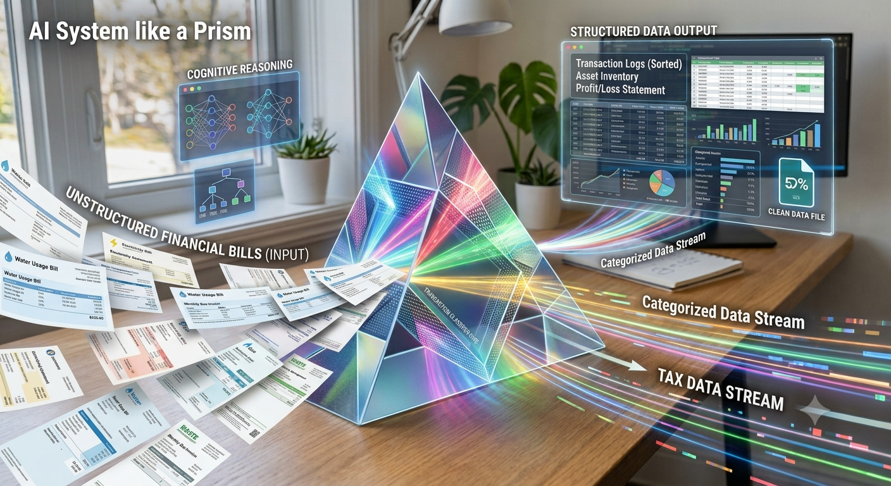
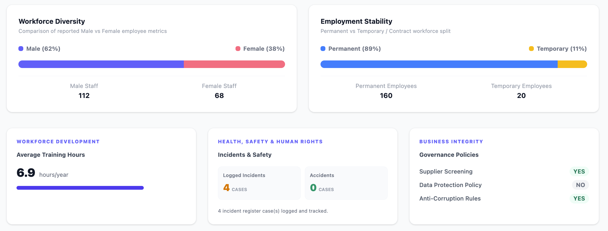
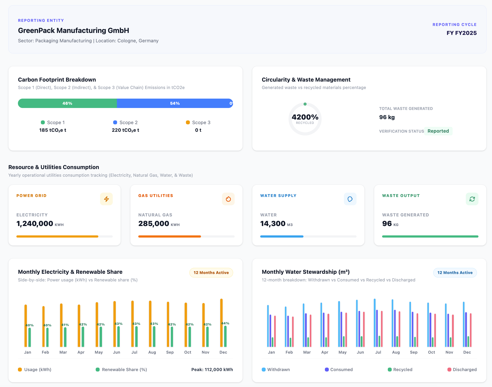
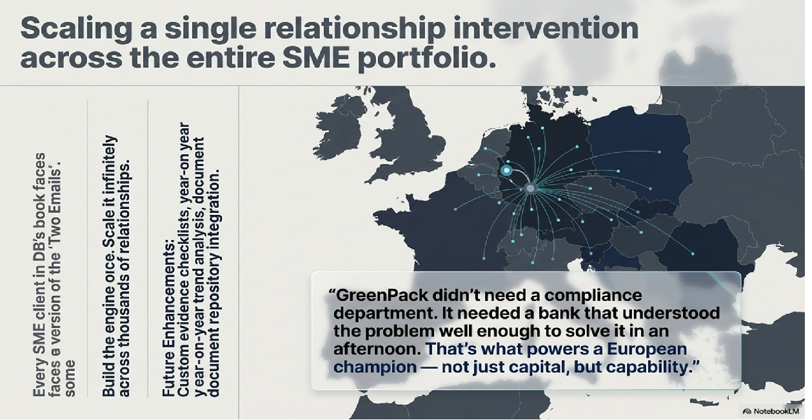
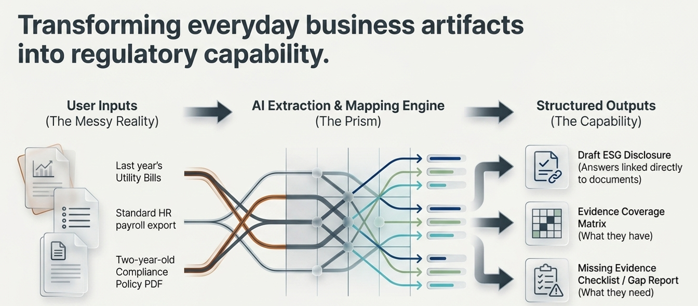

Upload Documents
Utility Bills Policies HR Export Energy Data
Helping SMEs complete ESG disclosures using AI in minutes—not weeks.
Start StoryOne ordinary afternoon...
Please complete our Supplier Sustainability Questionnaire.
Provide ESG data to qualify for preferential ESG-linked loan pricing.
When uncertainty strikes, GreenPack turns to the relationship it already trusts.
The finance controller receives two unexpected requests and doesn't know where to begin.
Instead of hiring consultants, GreenPack calls the trusted Deutsche Bank RM.
An AI-powered assistant that transforms existing company documents into structured ESG disclosures.

Utility bills HR records Policies Compliance notes Invoices
Automatically extracts ESG information without asking the customer to collect new data.
Creates audit-ready answers linked back to original evidence.
Watch GreenPack complete its ESG questionnaire within minutes.
Utility Bills Policies HR Export Energy Data
The assistant understands documents, classifies ESG data, and identifies applicable VSME questions.
Automatically calculates Scope 1 Scope 2 Energy Usage Carbon Metrics
Professional ESG responses with document references.
GreenPack completes weeks of work in one afternoon.
AI identifies only the questions relevant to GreenPack.
Automatically calculated from utility bills.
Professionally written and fully referenced back to original documents.
Climate Risk, Biodiversity, and Water Risk.


From weeks of uncertainty to one afternoon of confidence.
Human review is still required, but the "ESG Disclosure Assistant" completes the heavy lifting.
One side-by-side view showing how the "ESG Disclosure Assistant" delivers value to both the SME and the bank.
The ESG Disclosure Assistant helps SMEs turn a complex reporting task into a growth advantage.
Complete sustainability requests quickly and protect valuable customer relationships.
Provide verified ESG data and unlock ESG-linked financing opportunities.
Generate emissions, governance, and workforce information from existing documents.
Solving real customer problems while improving ESG lending and client engagement.
Relationship Managers become trusted advisors rather than only loan providers.
Structured, evidence-backed ESG information instead of scattered spreadsheets.
ESG-linked lending decisions become quicker and more accurate.

AI Platform
Relationship Managers
SME Clients
Hours Saved
